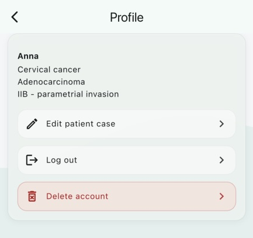

Delete Your Account
We respect your right to control your personal data. You can delete your Cervi Tracker account and all associated data at any time using one of the methods described below.
Option 1: Delete from the App
The fastest way to delete your account is directly within the Cervi Tracker app:
- Open the app and navigate to Hub
- Tap on Settings
- Tap Delete Account
- Confirm deletion when prompted
Your account and all associated data will be permanently removed immediately.

Option 2: Request via Email
If you are unable to delete your account through the app, you can request deletion by emailing us. Please include the email address associated with your Cervi Tracker account.
We will process your request and confirm deletion within 48 hours.
What Data Is Deleted?
Upon account deletion, the following data is permanently removed:
- Your user profile and authentication credentials
- All personal health data and entered medical records
- Treatment timelines, imaging studies, and blood test results
- All app preferences and settings
This action is irreversible. Once your account is deleted, it cannot be recovered.